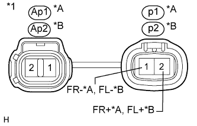
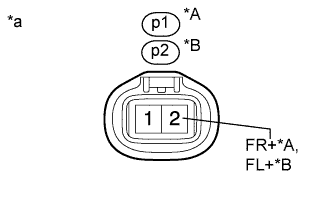

DTC C1405 Обрыв или короткое замыкание в цепи правого переднего датчика частоты вращения |
DTC C1406 Обрыв или короткое замыкание в цепи левого переднего датчика частоты вращения |
| Код DTC | Условие обнаружения DTC | Неисправный участок |
| C1405 C1406 | Выполняется любое из следующих условий:
|
|
| 1.ПРОВЕРЬТЕ ЖГУТ И РАЗЪЕМ (НА НАЛИЧИЕ КРАТКОВРЕМЕННОГО РАЗМЫКАНИЯ) |
С помощью портативного диагностического прибора проверьте, нет ли кратковременных размыканий в жгуте проводов и разъеме, соответствующих DTC (Нажмите здесь).
| Информация на дисплее прибора | Измеряемая величина / диапазон измерения | Нормальное состояние | Замечание по диагностике |
| FR Speed Open | Обрыв в цепи правого переднего датчика частоты вращения / Error или Normal | Нормальное состояние | - |
| FL Speed Open | Обрыв в цепи левого переднего датчика частоты вращения / Error или Normal | Нормальное состояние | - |
|
| ||||
| OK | |
| 2.СНИМИТЕ ПОКАЗАНИЯ ПОРТАТИВНОГО ДИАГНОСТИЧЕСКОГО ПРИБОРА (FR/FL WHEEL SPEED) |
Выключите зажигание
Подсоедините портативный диагностический прибор к DLC3.
Запустите двигатель.
Включите портативный диагностический прибор.
Войдите в следующие меню: Chassis / ABS/VSC/TRC / Data List.
| Информация на дисплее прибора | Измеряемая величина / диапазон измерения | Нормальное состояние | Замечание по диагностике |
| FR Wheel Speed | Показание правого переднего датчика частоты вращения / мин.: 0 км/час (0 миль в час), макс.: 326 км/час (202 мили в час) | Действительная скорость колеса | При движении с постоянной скоростью значительные колебания отсутствуют. |
| FL Wheel Speed | Показание левого переднего датчика частоты вращения / мин.: 0 км/час (0 миль в час), макс.: 326 км/час (202 мили в час) | Действительная скорость колеса | При движении с постоянной скоростью значительные колебания отсутствуют. |
Убедитесь в отсутствии расхождения между показанием скорости на выходе датчика частоты вращения, отображаемым на дисплее портативного диагностического прибора, и значением скорости на спидометре во время движения автомобиля.
|
| ||||
| OK | |
| 3.СНОВА ПРОВЕРЬТЕ DTC |
Выключите зажигание.
Сбросьте коды DTC (Нажмите здесь).
Запустите двигатель.
Совершите поездку на автомобиле со скоростью не менее 40 км/час (25 миль в час) длительностью 60 с или более.
Проверьте, выводится ли тот же DTC (Нажмите здесь).
| Результат | Следующий шаг |
| DTC не выводится | А |
| DTC выводится | B |
|
| ||||
| А | ||
| ||
| 4.ПРОВЕРЬТЕ ПРОВОД ДАТЧИКА СИСТЕМЫ ПРОТИВОСКОЛЬЖЕНИЯ |
Выключите зажигание.
Убедитесь, что фиксирующая и соединительная части разъемов не ослаблены.
Снимите провод датчика системы противоскольжения (Нажмите здесь).
|  |
Измерьте сопротивление в соответствии со значениями, приведенными в таблице ниже.
| Контакты для подключения диагностического прибора | Состояние | Заданные условия |
| Ap1-1 - p1-1 (FR-) | Всегда | Менее 1 Ом |
| Ap1-2 - p1-2 (FR+) | Всегда | Менее 1 Ом |
| Ap1-1 - Ap1-2 | Всегда | 10 кОм или более |
| Контакты для подключения диагностического прибора | Состояние | Заданные условия |
| Ap2-1 - p2-1 (FL-) | Всегда | Менее 1 Ом |
| Ap2-2 - p2-2 (FL+) | Всегда | Менее 1 Ом |
| Ap2-1 - Ap2-2 | Всегда | 10 кОм или более |
| *A | Для правой стороны |
| *B | Для левой стороны |
| *1 | Кабель датчика системы противоскольжения: |
|
| ||||
| OK | |
| 5.ПРОВЕРЬТЕ ЖГУТ ПРОВОДОВ И РАЗЪЕМ (ЭБУ СИСТЕМЫ ПРОТИВОСКОЛЬЖЕНИЯ – ПЕРЕДНИЙ ДАТЧИК ЧАСТОТЫ ВРАЩЕНИЯ) |
Установите провод датчика системы противоскольжения.
Отсоедините разъем A6 ЭБУ системы противоскольжения.
Отсоедините разъемы p1 и/или p2 датчика частоты вращения.
Измерьте сопротивление в соответствии со значениями, приведенными в таблице ниже.
| Контакты для подключения диагностического прибора | Состояние | Заданные условия |
| A6-7 (FR+) - p1-2 (FR+) | Всегда | Менее 1 Ом |
| A6-7 (FR+) - масса | Всегда | 10 кОм или более |
| A6-6 (FR-) - p1-1 (FR-) | Всегда | Менее 1 Ом |
| A6-6 (FR-) - масса | Всегда | 10 кОм или более |
| Контакты для подключения диагностического прибора | Состояние | Заданные условия |
| A6-19 (FL+) - p2-2 (FL+) | Всегда | Менее 1 Ом |
| A6-19 (FL+) - масса | Всегда | 10 кОм или более |
| A6-18 (FL-) - p2-1 (FL-) | Всегда | Менее 1 Ом |
| A6-18 (FL-) - масса | Всегда | 10 кОм или более |
|
| ||||
| OK | |
| 6.ПРОВЕРЬТЕ НАПРЯЖЕНИЕ НА КОНТАКТАХ (FR+, FL+) |
Подсоедините разъем A6 ЭБУ системы противоскольжения.
Отсоедините разъемы p1 и/или p2 датчика частоты вращения.
|  |
Измерьте напряжение в соответствии со значениями, приведенными в таблице.
| Контакты для подключения диагностического прибора | Положение переключателя | Заданные условия |
| p1-2 (FR+) - масса | Зажигание включено | 8–14 В |
| Контакты для подключения диагностического прибора | Положение переключателя | Заданные условия |
| p2-2 (FL+) - масса | Зажигание включено | 8–14 В |
| *A | Для правой стороны |
| *B | Для левой стороны |
| *a | Вид спереди разъема со стороны жгута проводов: (к переднему датчику частоты вращения) |
|
| ||||
| OK | ||
| ||